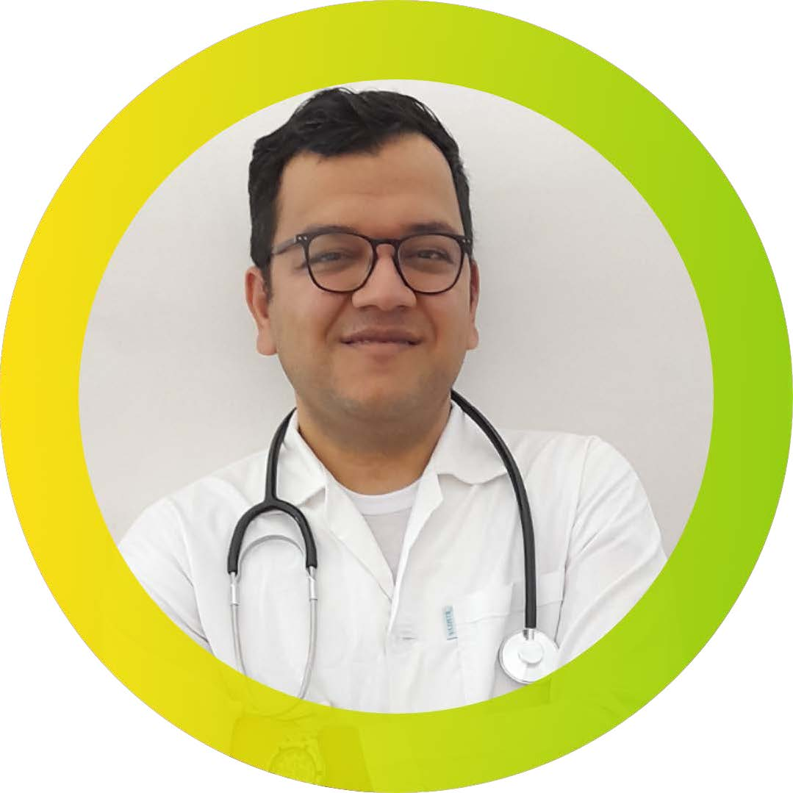

Hi, I'm Ramin Taghizadeh
Nutritionist specialized in diabetes reversal, functional medicine, and sustainable lifestyle transformation. Passionate about integrating personalized nutrition with emerging technologies such as machine learning to improve chronic disease management.
🔠Highlights
- Type 2 Diabetes Reversal Programs
- Ketogenic & Intermittent Fasting Meal Plans
- Functional and Personalized Nutrition
- Scientific Content Creation & Research Writing
📠Education
- M.Sc. in Health Science in Nutrition – Iran University of Medical Sciences (GPA: 4.0)
- B.Sc. in Nutrition – Shahid Beheshti University of Medical Sciences (GPA: 4.0)
💼 Experience
- Expert Dietitian – Ketonia Life (2022–Present)
- Expert Dietitian & Content Creator – Holly Food Canada (2018–Present)
- Expert Dietitian – CustomizedPlate Canada (2020–Present)
- Dietitian – Shohadaye Tajrish Hospital (2015–2016)
- Dietitian – Health Center of Qom City (2017–2018)
📚 Research & Publications
🖠Certificates
- Hazard Analysis and Critical Control Points (HACCP)
- SPSS & EndNote
- Research Strategy – Iran Univ. of Medical Sciences
📬 Contact
📧 Email: ramintaghizadeh74@gmail.com
🔗 ResearchGate |
LinkedIn |
Instagram |
Telegram